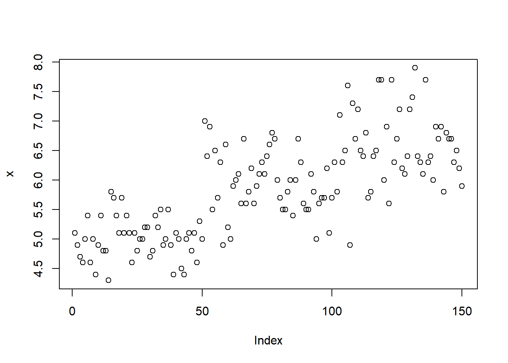
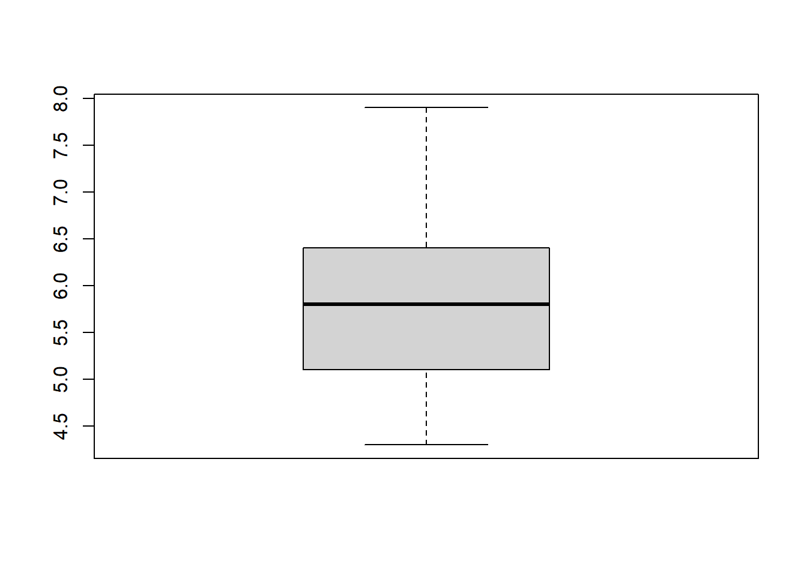
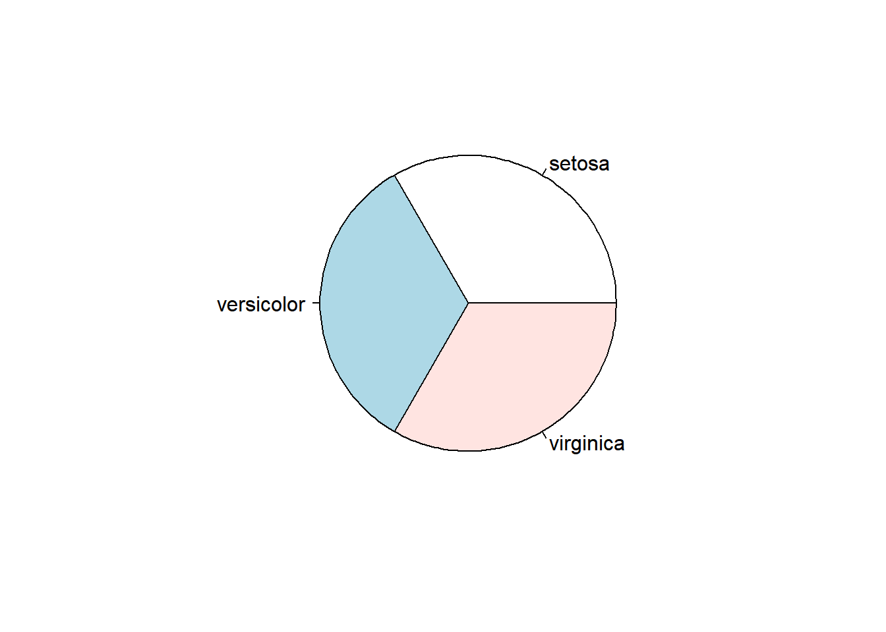
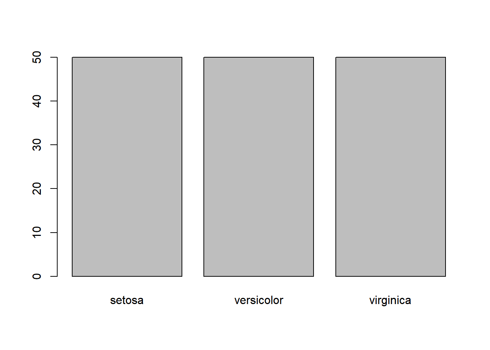

a = 10
a <- 10
print(a)[1] 10a = 10
a <- 10
print(a)[1] 10b = 3
print(a + b)[1] 13print(a - b)[1] 7print(a * b)[1] 30readxl 패키지 불러오기
require(base)data = iris변수이름 확인하기
names(data)[1] "Sepal.Length" "Sepal.Width" "Petal.Length" "Petal.Width" "Species" 데이터 종류에 따른 데이터 요약
수치형 데이터 요약
summary(data$Sepal.Length) Min. 1st Qu. Median Mean 3rd Qu. Max.
4.300 5.100 5.800 5.843 6.400 7.900 min(data$Sepal.Length) # 최솟값[1] 4.3max(data$Sepal.Length) # 최댓값[1] 7.9mean(data$Sepal.Length) # 평균[1] 5.843333median(data$Sepal.Length) # 중위수[1] 5.8수치형 데이터 요약2
x = data$Sepal.Length
summary(x) Min. 1st Qu. Median Mean 3rd Qu. Max.
4.300 5.100 5.800 5.843 6.400 7.900 min(x)[1] 4.3max(x)[1] 7.9범주형 데이터 요약
y = data$Species
count = table(y)
print(count)y
setosa versicolor virginica
50 50 50 수치형 데이터의 산점도(scatter plot)
plot(x)
수치형 데이터의 상자그림
boxplot(x)
y = data$Species
count = table(y)
pie(count)
barplot(count)